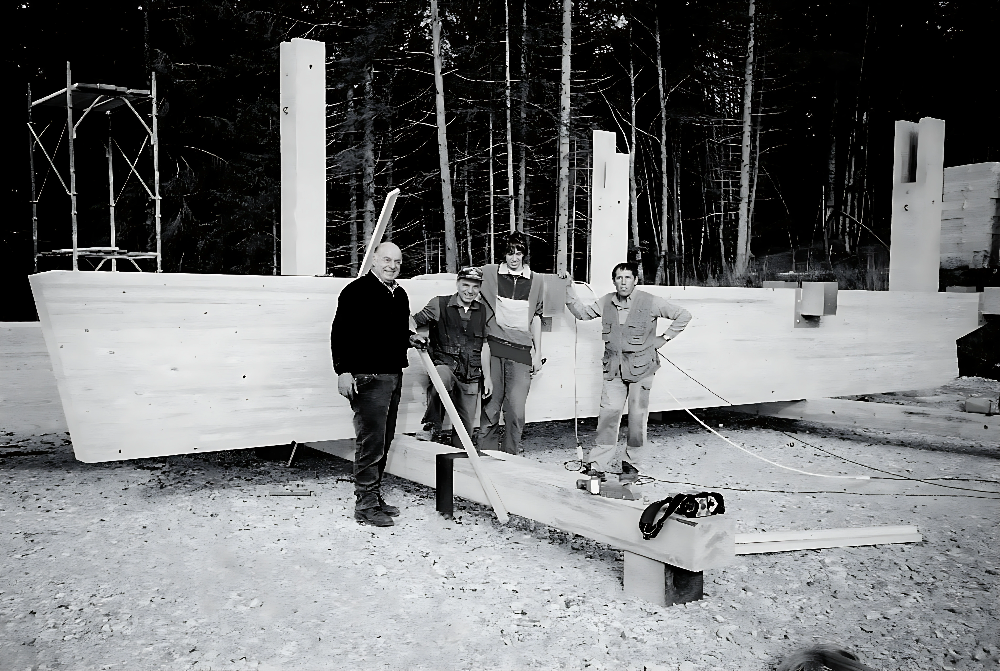

chi siamo
La passione per il legno ha radici profonde nella storia della nostra falegnameria.
Fin dagli inizi degli anni '70, i fratelli Aldo e Giulio Corradi, originari di Lavarone, hanno coltivato questa passione sin da ragazzi, acquistando una combinata usata presso la falegnameria Filz di Serrada.
La Falegnameria Corradi ha preso vita circa 10 anni dopo, nella primavera del 1981, quando Aldo, dopo aver superato l'esame provinciale per la qualifica di Artigiano, ha avviato l'attività presso la bottega di Ezio Vanin, un vecchio falegname in pensione, insieme ad un dipendente: Umberto.
Nel 1983, il fratello Giulio, è entrato come socio, e la falegnameria ha trasferito la sua sede nella frazione di Slaghenaufi.
Umberto è rimasto fedele come dipendente fino al suo pensionamento nel 1991.
Il 2003 ha segnato l'inizio degli stage per Simone, figlio di Aldo, organizzati dall'Istituto d'Arte Vittoria di Trento.
Nel 2004, sono iniziati i lavori per la nuova sede nella zona artigianale di Lavarone, completato nel 2006.
Nel 2007, Simone è entrato in società al posto di Giulio, che aveva raggiunto l'età pensionabile e concluso l'attività.
Il 2010 è stato un anno di investimenti significativi per la nostra falegnameria, con l'acquisto di un pantografo a controllo numerico, anche se di seconda mano.

Nel 2011, ci siamo concentrati sul risparmio energetico installando un impianto fotovoltaico da 100 kW sul tetto dello stabile. Questa iniziativa ha reso la falegnameria quasi completamente autosufficiente, supportata anche dalla caldaia a bricchetti che sfrutta gli scarti di produzione per il riscaldamento del capannone.
Nonostante siano trascorsi più di trent'anni, la Falegnameria Corradi continua a lavorare con la stessa passione e desiderio di innovazione dei primi giorni.
La nostra dedizione al legno e all'artigianato si riflette nella qualità dei nostri prodotti e nella nostra costante ricerca di eccellenza.